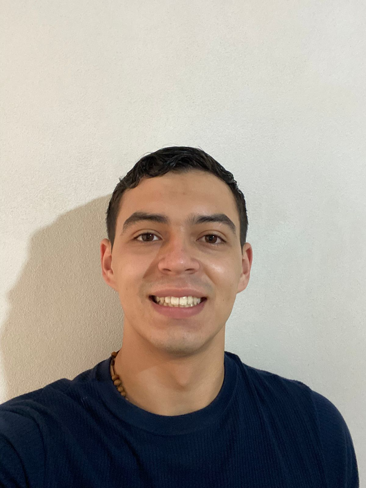

Camilo Miranda Castaño

About Me:
Computer Science student with hands on experience in IT support, process analysis, and post sales service.
Skilled in troubleshooting hardware, networks, and cloud environments, with a strong ability to learn quickly
and adapt to new technologies. Passionate about problem solving and process optimization, ensuring
efficiency and reliability in IT operations. Collaborative professional with excellent communication skills,
capable of performing under pressure and delivering high quality support in fast paced environments.
Expirence:
Post Sales | Construplaza | English-Spanish
Analyzed customer issues and web related problems, created dashboards and reports for monitoring and
tracking, and supported sales agents by identifying trends and improvement areas.
- Help customers by phone and chat, answering questions and providing guidance
- Solve technical and general issues quickly to ensure customer satisfaction.
- Reporting and analysit of the problems for my supervaisors.
- Work closely with other teams to ensure customer requests are handled well
IT Support | Intercontinental Hotel
Developed a hotel room management database and contributed to a major IT infrastructure
upgrade, improving operations and data access across departments
- Improved network infrastructure: routers and switches.
- Created a database on cloud SQL to manage hotel room info.
- Provided IT solutions to the staff.
- Troubleshot hardware and software issues across departments.
Technical Support (Networks) | Bridgestone
- Provided hands-on support for cloud networking infrastructure and virtual machines in Microsoft
Azure.
- Performed switch configuration and updates, ensuring stable connectivity across departments.
- Analyzed and documented the network architecture of the building, gaining strong knowledge of
structured cabling, routing, and switching.
- Collaborated with IT team members to resolve incidents and maintain high availability of systems.
Education & Skills